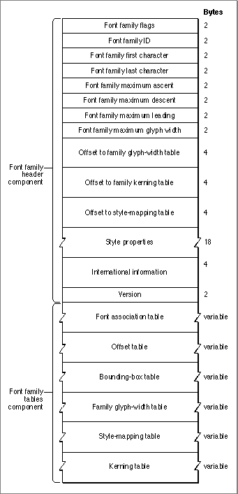

The Font Family ('FOND') Resource
A font family contains references to the fonts (which can be bitmapped font ['NFNT'], outline font ['sfnt'], or'FONT'resources) that make up the family and information that describes the family as a whole, such as a global width table for each available style.The font family (
'FOND') resource contains general information about the font family, the font association table, and a collection of optional tables: the family glyph-width table, the style-mapping table, the kerning table, the offset table, and the bounding-box table. Several data structures and routines use the font family resource. For example, the global width table can use the font family information to find the recommended glyph widths and the LaserWriter printer driver can use tables that contain information about kerning pairs and mapping of styles to printer fonts.The font family resource consists of a header component, which contains general information about the font family, and a font family tables component, which consists of the font association table and some number (possibly zero) of the optional tables that provide measurement and naming information about the font family. The header component of this resource is represented by the
FamRecdata type, the declaration of which is shown in the section "The Font Family Record" on page 4-42. The structure of this resource is shown in Figure 4-22.Figure 4-22 The font family
('FOND')resource
The header component of the font family resource consists of a number of elements that describe characteristics of the family. Each of the elements in this component is represented by a field in theFamRecdata type.The font family tables component of the font family resource contains a number of tables. The font association table must be included in the resource, but the other tables are all optional. You can determine whether or not the glyph-width, kerning, or style-mapping tables are present by examining the offset value for each. Each offset value is a number of bytes from the beginning of the resource to the table; an offset of 0 means that the table is not present. For example, if the value of the
- Font family flags. An integer value, the bits of which specify general characteristics of the font family. This value is represented by the
ffFlagsfield in theFamRecdata type. The bits in theffFlagsfield have the following meanings:
Bit Meaning 0 This bit is reserved by Apple and should be cleared to 0. 1 This bit is set to 1 if the resource contains a glyph-width table. 2-11 These bits are reserved by Apple and should be cleared to 0. 12 This bit is set to 1 if the font family ignores the value of the FractEnableglobal variable when deciding whether to use fixed-point values for stylistic variations; the value of bit 13 is then the deciding factor. The value of theFractEnableglobal variable is set by theSetFractEnableprocedure.13 This bit is set to 1 if the font family should use integer extra width for stylistic variations. If not set, the font family should compute the fixed-point extra width from the family style-mapping table, but only if the FractEnableglobal variable has a value ofTRUE.14 This bit is set to 1 if the family fractional-width table is not used, and is cleared to 0 if the table is used. 15 This bit is set to 1 if the font family describes fixed-width fonts, and is cleared to 0 if the font describes proportional fonts. - Font family ID. An integer value that specifies the
'FOND'resource ID number for this font family. This value is represented by theffFamIDfield in theFamRecdata type.- Font family first character. An integer value that specifies the ASCII character code of the first glyph in the font family. This value is represented by the
ffFirstCharfield in theFamRecdata type.- Font family last character. An integer value that specifies the ASCII character code of the last glyph in the font family. This value is represented by the
ffLastCharfield in theFamRecdata type.- Font family maximum ascent. The maximum ascent measurement for a one-point font of the font family. This value is in a 16-bit fixed-point format with an integer part in the high-order 4 bits and a fractional part in the low-order 12 bits. This value is represented by the
ffAscentfield in theFamRecdata type.- Font family maximum descent. The maximum descent measurement for a one-point font of the font family. This value is in a 16-bit fixed-point format with an integer part in the high-order 4 bits and a fractional part in the low-order 12 bits. This value is represented by the
ffDescentfield in theFamRecdata type.- Font family maximum leading. The maximum leading for a 1-point font of the font family. This value is in a 16-bit fixed-point format with an integer part in the high-order 4 bits and a fractional part in the low-order 12 bits. This value is represented by the
ffLeadingfield in theFamRecdata type.- Font family maximum glyph width. The maximum glyph width of any glyph in a one-point font of the font family. This value is in a 16-bit fixed-point format with an integer part in the high-order 4 bits and a fractional part in the low-order 12 bits. This value is represented by the
ffWidMaxfield in theFamRecdata type.- Offset to family glyph-width table. The offset to the family glyph-width table from the beginning of the font family resource to the beginning of the table, in bytes. The family glyph-width table is described in the section "The Family Glyph-Width Table," beginning on page 4-92. This value is represented by the
ffTabOfffield in theFamRecdata type.- Offset to family kerning table. The offset to the beginning of the kerning table from the beginning of the
'FOND'resource, in bytes. The kerning table is described in the section "The Font Family Kerning Table," beginning on page 4-99. This value is represented by theffKernOfffield in theFamRecdata type.- Offset to family style-mapping table. The offset to the style-mapping table from the beginning of the font family resource to the beginning of the table, in bytes. The style-mapping table is described in the section "The Style-Mapping Table," beginning on page 4-93. This value is represented by the
ffStyleOfffield in theFamRecdata type.- Style properties. An array of 9 integers, each indicating the extra width, in pixels, that would be added to the glyphs of a 1-point font in this font family after a stylistic variation has been applied. This value is represented by the
ffPropertyfield in theFamRecdata type, which is an array with nine values. The Font Manager multiplies these values by the requested point size to get the correct width. Each value is in a 16-bit fixed-point format with an integer part in the high-order 4 bits and a fractional part in the low-order 12 bits. If the font with a given stylistic variation already exists as an intrinsic font, the Font Manager ignores the value in theffPropertyfield for that style. The values in this array are used as follows:
Property
indexMeaning 1 Extra width for plain text. Should be set to 0. 2 Extra width for bold text. 3 Extra width for italic text. 4 Extra width for underline text. 5 Extra width for outline text. 6 Extra width for shadow text. 7 Extra width for condensed text. 8 Extra width for extended text. 9 Not used. Should be set to 0. - International information. An array of 2 integers reserved for internal use by script management software. This value is represented by the
ffIntlfield in theFamRecdata type.- Version. An integer value that specifies the version number of the font family resource, which indicates whether certain tables are available. This value is represented by the
ffVersionfield in theFamRecdata type. Because this field has been used inconsistently in the system software, it is better to analyze the data in the resource itself instead of relying on the version number. The possible values are as follows:
Value Meaning $0000 Created by the Macintosh system software. The font family resource will not have the glyph-width tables and the fields will contain 0. $0001 Original format as designed by the font developer. This font family record probably has the width tables and most of the fields are filled. $0002 This record may contain the offset and bounding-box tables. $0003 This record definitely contains the offset and bounding-box tables. ffWTabOfffield is greater than 0, the glyph-width table is present in the resource data.Additional tables, including the bounding-box table, can be added to the font family resource by a font designer. Whenever any table, including the glyph-width, kerning, and style-mapping tables, is included in the resource data, an offset table is included. The offset table contains a long integer offset value for each table that follows it.
Subtopics
- The Font Style Code
- The Font Association Table
- The Offset Table
- The Bounding-Box Table
- The Family Glyph-Width Table
- The Style-Mapping Table
- The Font Family Kerning Table